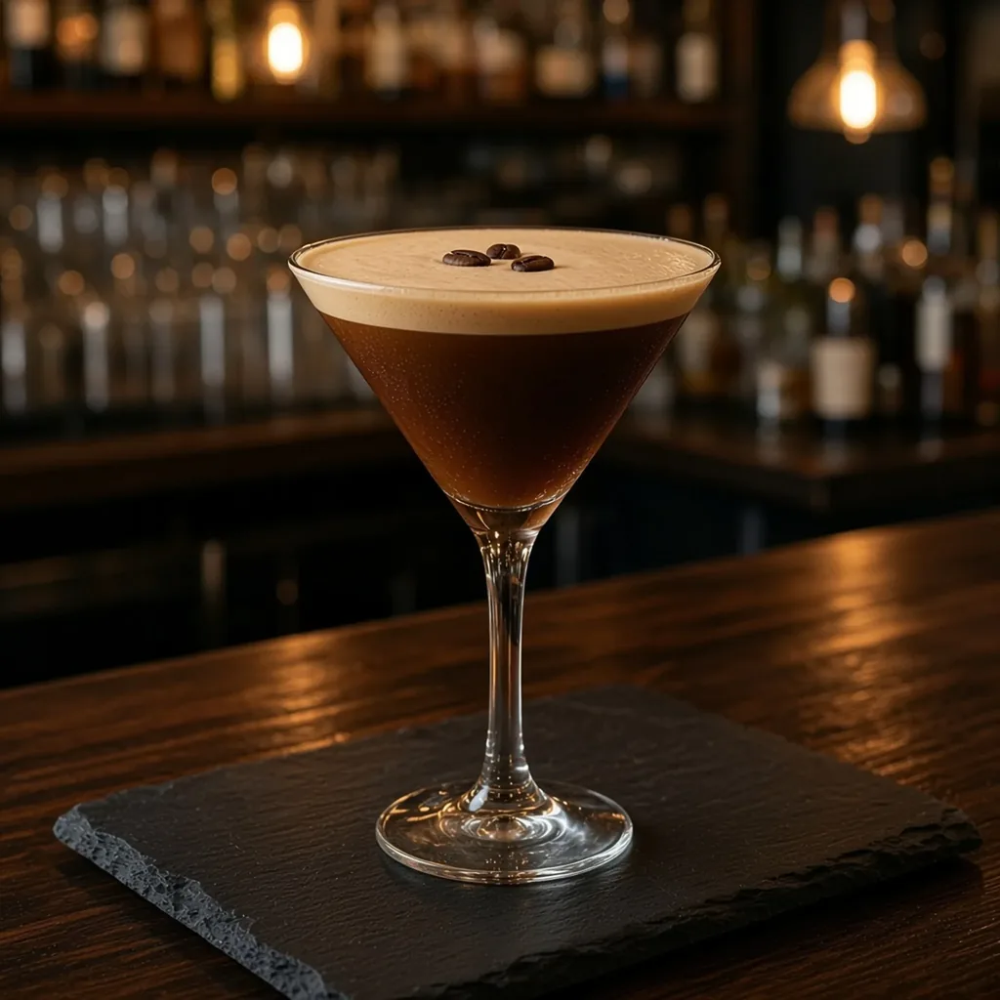

Moscow Mule
Vodka, lime and spicy ginger beer, traditionally in a copper mug.

Vodka, lime and spicy ginger beer, traditionally in a copper mug.
Leave out the vodka. Ginger beer and lime over ice is a good drink on its own.
Pour it, then start a room. Drinking is optional in every game.
 CosmopolitanCitrus vodka, orange liqueur, lime and just enough cranberry to turn it pink.
CosmopolitanCitrus vodka, orange liqueur, lime and just enough cranberry to turn it pink.
 DaiquiriThe real one is three ingredients: rum, lime and sugar, shaken and served up.
DaiquiriThe real one is three ingredients: rum, lime and sugar, shaken and served up.
 NegroniEqual parts gin, bitter red aperitif and sweet vermouth. Bitter, strong and simple.
NegroniEqual parts gin, bitter red aperitif and sweet vermouth. Bitter, strong and simple.

Espresso MartiniVodka, coffee liqueur and fresh espresso, shaken until it has a thick foam.